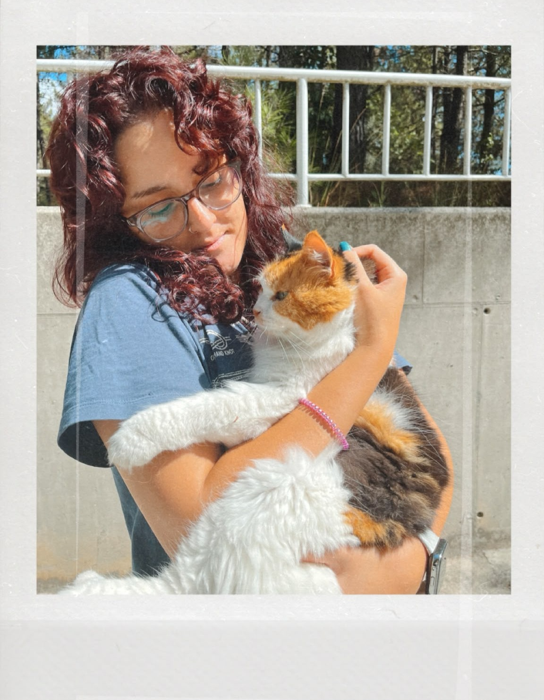

I am an incoming Ph.D. student in Mathematics at Sabancı University, where I work under the supervision of Prof. Ferruh Özbudak.
My research interests include coding theory, finite fields, algebraic curves over finite fields, and generalized covering radii of linear codes.
I recently defended my M.Sc. thesis in Mathematics at Sabancı University. I completed my B.Sc. in Mathematics at Galatasaray University in 2024 as the top-ranked student in my department.
I am also interested in cryptography, computational methods in finite fields, and applications of coding theory.